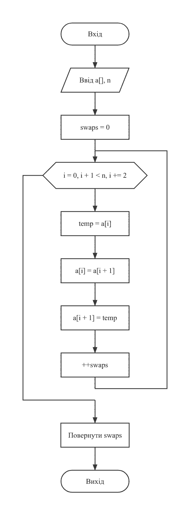
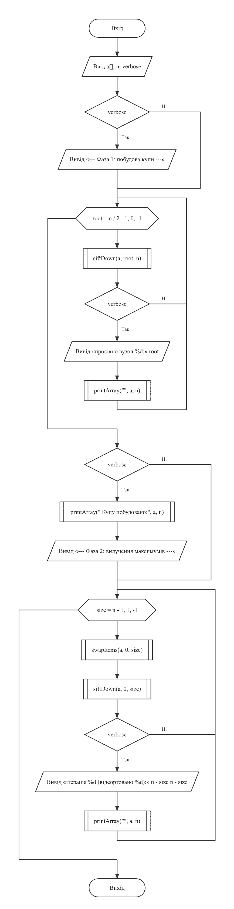
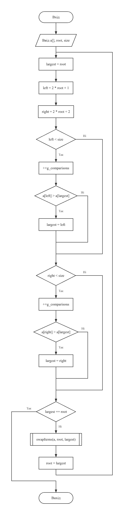
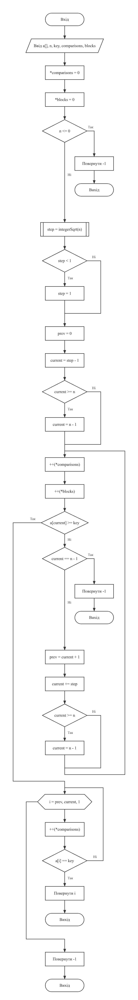
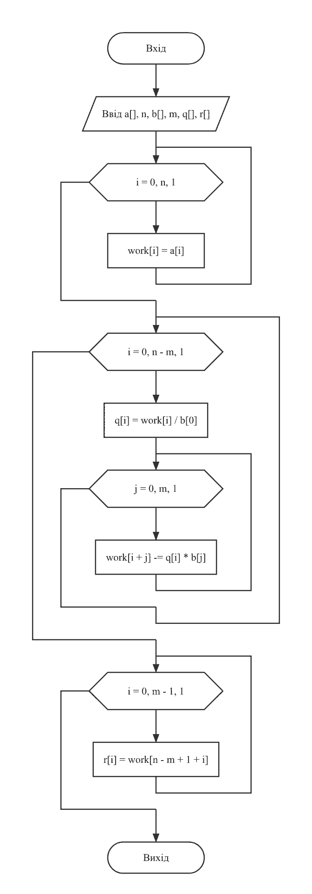
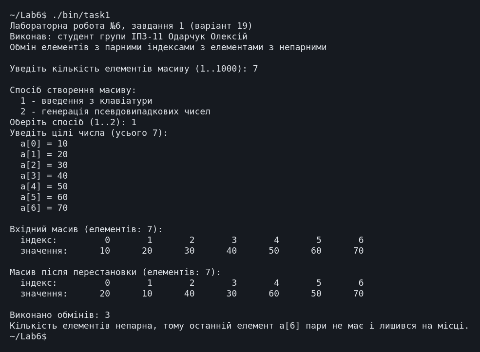
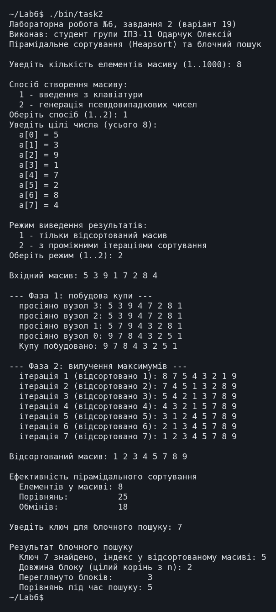
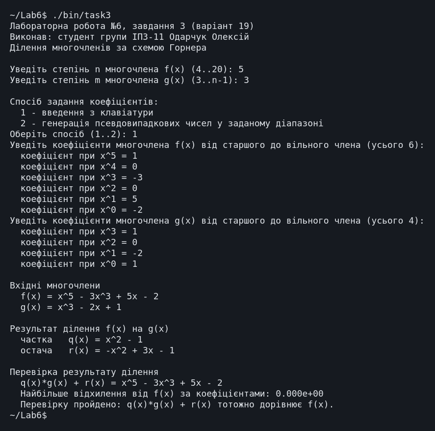
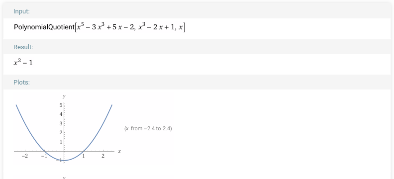
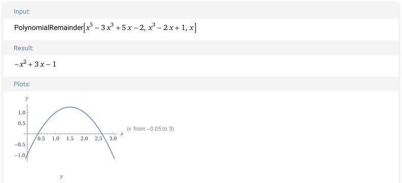

← До переліку лабораторних робіт
Лабораторна робота №6. Одновимірні масиви
Варіант 19. Виконав: Одарчук Олексій, КНУ імені Тараса Шевченка, ФІТ, група ІПЗ-11. C17, gcc
1. Мета роботи
- Ознайомитися з особливостями типу масиву.
- Опанувати технологію застосування масивів даних.
- Навчитися розробляти алгоритми та програми із застосуванням одновимірних масивів.
2. Умова задачі
Завдання 1 (19.1) - базові операції обробки масивів
Створити одновимірний масив, кількість елементів якого ввести з клавіатури. Передбачити меню вибору способу створення масиву: введення з клавіатури або генерація псевдовипадкових чисел. Поміняти місцями елементи, що мають парні індекси, з елементами, які мають непарні індекси. Надрукувати отриманий масив.
Завдання 2 (19.2) - алгоритми сортування та пошуку
Створити одновимірний масив із меню вибору способу створення. Відсортувати масив за алгоритмом пірамідального сортування (Heapsort) [1.8] та здійснити пошук у масиві за алгоритмом блочного пошуку [2.10]. Передбачити виведення проміжних результатів у процесі виконання ітерацій сортування, визначити ефективність методу сортування (кількість порівнянь та обмінів) і методу пошуку (кількість порівнянь), а також вибір режиму виведення: тільки відсортований масив або з проміжними ітераціями.
Завдання 3 (19.3) - многочлени
Увести з клавіатури цілі числа n, m (n > m), що є степенями двох многочленів, n > 2, m > 2. Увести або згенерувати у вказаному діапазоні коефіцієнти многочленів:
n m
f(x) = Σ aᵢ·x^(n-i) , g(x) = Σ bᵢ·x^(m-i)
i=0 i=0
Значення деяких коефіцієнтів можуть дорівнювати нулю. Визначити і вивести частку від ділення f(x) на g(x), використовуючи схему Горнера [3.5], та остачу від ділення. Здійснити перевірку результату, визначивши добуток частки на дільник з додаванням остачі.
Обмеження умови: забороняється використовувати STL, шаблон
std::vector, а також бібліотечні методи сортування та пошуку. Застосування
покажчиків, динамічних масивів, операторів new/delete у
лабораторній роботі №6 не схвалюється.
3. Аналіз задачі та теоретичне обґрунтування
Завдання 1
Обмінюються сусідні пари: a[0]↔a[1], a[2]↔a[3] і так далі. Цикл іде з кроком 2 за умови
i + 1 < n; при непарній кількості елементів останній лишається на місці,
про що програма повідомляє.
Завдання 2. Пірамідальне сортування
Купа (heap) - це масив, який трактується як майже повне бінарне дерево: нащадками елемента
з індексом i є елементи з індексами 2i+1 та 2i+2.
Властивість незростаючої купи: значення батька не менше за значення кожного з нащадків,
тому максимум завжди в корені (індекс 0).
Алгоритм складається з двох фаз:
-
Побудова купи. Просіювання вниз (
siftDown) виконується для всіх внутрішніх вузлів, відn/2 - 1до кореня. -
Вилучення максимумів. Корінь (найбільший елемент) міняється місцями з останнім
елементом невідсортованої частини, розмір купи зменшується на одиницю, а новий корінь
просіюється вниз. Після
n-1таких кроків масив упорядковано за неспаданням.
Трудомісткість - O(n·log n) навіть у найгіршому випадку, додаткова пам'ять не
потрібна; недолік - нестійкість (рівні елементи можуть змінити взаємний порядок).
Завдання 2. Блочний пошук
Масив умовно поділяється на блоки завдовжки step. Спочатку переглядаються
лише останні елементи блоків: індекс збільшується кроком step, доки не буде
знайдено блок, останній елемент якого не менший за ключ. Далі всередині цього блоку
виконується послідовний пошук.
Оптимальна довжина блоку - √n. Обґрунтування: при довжині блоку
k потрібно приблизно n/k стрибків і до k порівнянь
усередині блоку, разом n/k + k. Ця сума мінімальна при k = √n і
дорівнює 2√n.
Довжина блоку обчислюється власною функцією integerSqrt(), а модуль дійсного
числа в завданні 3, де заборонено будь-які бібліотечні методи, - функцією
absValue(); math.h не підключається.
Блочний пошук повільніший за двійковий (O(log n)), але швидший за лінійний
(O(n)). Масив має бути впорядкованим, тому пошук виконується після
сортування.
Завдання 3. Ділення многочленів за схемою Горнера
Використано узагальнену схему Горнера (синтетичне ділення). Робочий масив ініціалізується коефіцієнтами діленого. На кожному кроці старший коефіцієнт робочого масиву ділиться на старший коефіцієнт дільника - це черговий коефіцієнт частки; потім із робочого масиву віднімається дільник, помножений на цей коефіцієнт і зсунутий на відповідну позицію:
q[i] = work[i] / b[0] work[i+j] = work[i+j] - q[i]·b[j], j = 0...m виконується для i = 0 ... n-m
Після n-m+1 кроків останні m коефіцієнтів робочого масиву
утворюють остачу, тож її степінь менший за степінь дільника.
Кількість операцій множення з відніманням - (n-m+1)·(m+1); степені
x не обчислюються.
Контроль коректності. Старший коефіцієнт дільника не може дорівнювати нулю, інакше перший крок дав би ділення на нуль. Умова допускає нульові коефіцієнти, тому програма перевіряє цей випадок.
Література: Ковалюк Т.В. Алгоритмізація та програмування. - Львів.: "Магнолія 2006", 2024. - 400 с.; Deitel P., Deitel H. C++ How to Program. Pearson Education, Inc. Hoboken, New Jersey. 2017. - 3015 p.; Knuth D. The Art of Computer Programming. Vol. 3. Sorting and Searching. 1998. - 792 p.; Thomas H. Cormen, Charles E. Leiserson, Ronald L. Rivest, Clifford Stein Introduction to Algorithms, Third Edition 2009. - 960 p.
4. Блок-схема алгоритму





Схеми побудовано з текстів програм за допомогою rombik (rombik.app) відповідно до ДСТУ 19.701-90 (ISO 5807).
5. Текст програми
Завдання 1 - task1.c
/*==============================================================================
Лабораторна робота №6. Завдання 1. Варіант 19.
Тема: одновимірні масиви, базові операції обробки.
Умова (таблиця 6.1, завдання 19.1): створити одновимірний масив, кількість
елементів якого ввести з клавіатури. Передбачити меню вибору способу
створення масиву: введення з клавіатури або генерація псевдовипадкових
чисел. Поміняти місцями елементи, що мають парні індекси, з елементами,
які мають непарні індекси. Надрукувати отриманий масив.
ОБМЕЖЕННЯ УМОВИ: забороняється використовувати бібліотеку стандартних
шаблонів STL і шаблон вектору std::vector. Застосування покажчиків,
динамічних масивів, операторів new, delete в лабораторній роботі №6
не схвалюється.
Виконав: Одарчук Олексій, КНУ імені Тараса Шевченка, ФІТ, група ІПЗ-11.
Компілятор: gcc -std=c17
==============================================================================*/
#include <stdio.h>
#include <stdbool.h>
#include <stdlib.h>
#include <time.h>
/* Найбільша припустима кількість елементів масиву. Межа масиву в мові C має бути сталим виразом часу компіляції,
а змінна з модифікатором const ним не є, тому розмір задано директивою
препроцесора. */
#define MAX_SIZE 1000
/* Найбільше за модулем значення елемента. */
const int MAX_ABS_VALUE = 1000000;
/*------------------------------------------------------------------------------
skipLine - відкинути залишок рядка введення разом із символом '\n'.
------------------------------------------------------------------------------*/
void skipLine(void)
{
int c = getchar();
while (c != '\n' && c != EOF)
{
c = getchar();
}
}
/*------------------------------------------------------------------------------
readInt - прочитати ціле число із заданого діапазону з контролем введення.
Параметри:
prompt [вхідний] - текст запрошення;
value [вихідний] - адреса змінної для введеного числа;
low, high [вхідні] - межі припустимого діапазону.
Повертає : true - число прочитано; false - вхідні дані вичерпано.
------------------------------------------------------------------------------*/
bool readInt(const char *prompt, int *value, int low, int high)
{
for (;;)
{
printf("%s", prompt);
const int scanned = scanf("%d", value);
if (scanned == EOF)
{
return false;
}
skipLine();
if (scanned == 1 && *value >= low && *value <= high)
{
return true;
}
printf("Помилка: потрібне ціле число від %d до %d.\n", low, high);
}
}
/*------------------------------------------------------------------------------
fillFromKeyboard - заповнити масив значеннями, введеними з клавіатури.
Параметри:
a [вихідний] - масив, що заповнюється;
n [вхідний] - кількість елементів.
Повертає : true - масив заповнено; false - вхідні дані вичерпано.
------------------------------------------------------------------------------*/
bool fillFromKeyboard(int a[], int n)
{
printf("Уведіть цілі числа (усього %d):\n", n);
for (int i = 0; i < n; ++i)
{
char prompt[32];
snprintf(prompt, sizeof prompt, " a[%d] = ", i);
if (!readInt(prompt, &a[i], -MAX_ABS_VALUE, MAX_ABS_VALUE))
{
return false;
}
}
return true;
}
/*------------------------------------------------------------------------------
fillRandom - заповнити масив псевдовипадковими числами із заданого діапазону.
Параметри:
a [вихідний] - масив, що заповнюється;
n [вхідний] - кількість елементів;
low, high [вхідні] - межі діапазону значень.
Локальні змінні:
range - кількість різних значень у діапазоні.
------------------------------------------------------------------------------*/
void fillRandom(int a[], int n, int low, int high)
{
const int range = high - low + 1;
/* Масштабування rand() на діапазон замість rand() % range: стандарт гарантує
лише RAND_MAX >= 32767, і для ширшого діапазону остача не охопила б
усіх значень. */
for (int i = 0; i < n; ++i)
{
a[i] = low + (int)((double)rand() / ((double)RAND_MAX + 1.0) * range);
}
}
/*------------------------------------------------------------------------------
printArray - вивести масив на екран у табличній формі.
Параметри:
title [вхідний] - заголовок, що передує масиву;
a [вхідний] - масив;
n [вхідний] - кількість елементів.
Індекси виводяться над значеннями, щоб було видно, які саме позиції
обмінялися місцями.
------------------------------------------------------------------------------*/
void printArray(const char *title, const int a[], int n)
{
printf("\n%s (елементів: %d):\n", title, n);
printf(" індекс: "); /* ширина збігається з написом "значення:" */
for (int i = 0; i < n; ++i)
{
printf("%8d", i);
}
printf("\n");
printf(" значення:");
for (int i = 0; i < n; ++i)
{
printf("%8d", a[i]);
}
printf("\n");
}
/*------------------------------------------------------------------------------
swapEvenOdd - поміняти місцями елементи з парними індексами з елементами
з непарними індексами.
Обмінюються сусідні пари: a[0] з a[1], a[2] з a[3], a[4] з a[5] і так далі.
Якщо кількість елементів непарна, останній елемент пари не має і лишається
на своєму місці.
Параметри:
a [вхідний/вихідний] - масив, елементи якого переставляються;
n [вхідний] - кількість елементів.
Повертає : кількість виконаних обмінів.
Локальні змінні:
swaps - лічильник виконаних обмінів;
temp - проміжна змінна для обміну значень.
------------------------------------------------------------------------------*/
int swapEvenOdd(int a[], int n)
{
int swaps = 0;
for (int i = 0; i + 1 < n; i += 2)
{
const int temp = a[i];
a[i] = a[i + 1];
a[i + 1] = temp;
++swaps;
}
return swaps;
}
/*------------------------------------------------------------------------------
Головна функція. Організовує меню створення масиву, виконує перестановку
та виводить масив до і після неї.
Локальні змінні:
a - оброблюваний масив;
n - кількість елементів масиву;
choice - обраний спосіб створення масиву;
low, high - межі діапазону для генерації псевдовипадкових чисел;
swaps - кількість виконаних обмінів.
------------------------------------------------------------------------------*/
int main(void)
{
printf("Лабораторна робота №6, завдання 1 (варіант 19)\n");
printf("Виконав: студент групи ІПЗ-11 Одарчук Олексій\n");
printf("Обмін елементів з парними індексами з елементами з непарними\n\n");
int n = 0;
if (!readInt("Уведіть кількість елементів масиву (1..1000): ", &n, 1, MAX_SIZE))
{
return 1;
}
int a[MAX_SIZE];
printf("\nСпосіб створення масиву:\n"
" 1 - введення з клавіатури\n"
" 2 - генерація псевдовипадкових чисел\n");
int choice = 0;
if (!readInt("Оберіть спосіб (1..2): ", &choice, 1, 2))
{
return 1;
}
if (choice == 1)
{
if (!fillFromKeyboard(a, n))
{
return 1;
}
}
else
{
int low = 0;
int high = 0;
if (!readInt("Уведіть нижню межу діапазону: ", &low, -MAX_ABS_VALUE,
MAX_ABS_VALUE))
{
return 1;
}
if (!readInt("Уведіть верхню межу діапазону: ", &high, low, MAX_ABS_VALUE))
{
return 1;
}
srand((unsigned)time(NULL));
fillRandom(a, n, low, high);
}
printArray("Вхідний масив", a, n);
const int swaps = swapEvenOdd(a, n);
printArray("Масив після перестановки", a, n);
printf("\nВиконано обмінів: %d\n", swaps);
if (n % 2 != 0)
{
printf("Кількість елементів непарна, тому останній елемент a[%d] "
"пари не має і лишився на місці.\n",
n - 1);
}
return 0;
}
Завдання 2 - task2.c
/*==============================================================================
Лабораторна робота №6. Завдання 2. Варіант 19.
Тема: алгоритми сортування та пошуку.
Умова (таблиця 6.1, завдання 19.2): створити одновимірний масив, кількість
елементів якого ввести з клавіатури. Передбачити меню вибору способу
створення масиву: введення з клавіатури або генерація псевдовипадкових
чисел. Відсортувати масив за алгоритмом пірамідального сортування
(Heapsort) [1.8] та здійснити пошук у масиві за алгоритмом блочного
пошуку [2.10]. Передбачити виведення проміжних результатів у процесі
виконання ітерацій сортування масиву.
Додаткові вимоги завдання 2:
- визначити ефективність методу сортування: кількість порівнянь та обмінів;
- визначити ефективність методу пошуку: кількість порівнянь;
- передбачити вибір режиму виведення результатів: або тільки відсортований
масив, або з проміжними ітераціями.
ОБМЕЖЕННЯ УМОВИ: забороняється використовувати STL, std::vector, а також
бібліотечні методи сортування та пошуку.
Виконав: Одарчук Олексій, КНУ імені Тараса Шевченка, ФІТ, група ІПЗ-11.
Компілятор: gcc -std=c17
==============================================================================*/
#include <stdio.h>
#include <stdbool.h>
#include <stdlib.h>
#include <time.h>
/* Найбільша припустима кількість елементів масиву. Межа масиву в мові C має бути сталим виразом часу компіляції,
а змінна з модифікатором const ним не є, тому розмір задано директивою
препроцесора. */
#define MAX_SIZE 1000
/* Найбільше за модулем значення елемента. */
const int MAX_ABS_VALUE = 1000000;
/* Лічильники ефективності. Оголошені глобально, щоб не захаращувати
заголовки функцій сортування службовими параметрами. */
unsigned long long g_comparisons = 0; /* порівнянь під час сортування */
unsigned long long g_swaps = 0; /* обмінів під час сортування */
/*------------------------------------------------------------------------------
skipLine - відкинути залишок рядка введення разом із символом '\n'.
------------------------------------------------------------------------------*/
void skipLine(void)
{
int c = getchar();
while (c != '\n' && c != EOF)
{
c = getchar();
}
}
/*------------------------------------------------------------------------------
readInt - прочитати ціле число із заданого діапазону з контролем введення.
Параметри: prompt [вхідний], value [вихідний], low, high [вхідні].
Повертає : true - число прочитано; false - вхідні дані вичерпано.
------------------------------------------------------------------------------*/
bool readInt(const char *prompt, int *value, int low, int high)
{
for (;;)
{
printf("%s", prompt);
const int scanned = scanf("%d", value);
if (scanned == EOF)
{
return false;
}
skipLine();
if (scanned == 1 && *value >= low && *value <= high)
{
return true;
}
printf("Помилка: потрібне ціле число від %d до %d.\n", low, high);
}
}
/*------------------------------------------------------------------------------
integerSqrt - цілий квадратний корінь: найбільше ціле k, для якого k*k <= n.
Обчислюється послідовним нарощуванням, без бібліотечної функції sqrt()
і заголовного файла math.h. Для допустимих розмірів масиву (до 1000
елементів) цикл виконує не більше 32 кроків.
Параметри: n [вхідний] - невід'ємне ціле число.
Повертає : цілу частину квадратного кореня з n.
Локальні змінні:
root - поточний кандидат на значення кореня.
------------------------------------------------------------------------------*/
int integerSqrt(int n)
{
int root = 0;
while ((root + 1) * (root + 1) <= n)
{
++root;
}
return root;
}
/*------------------------------------------------------------------------------
printArray - вивести масив у рядок із заголовком.
Параметри: title [вхідний], a [вхідний], n [вхідний].
------------------------------------------------------------------------------*/
void printArray(const char *title, const int a[], int n)
{
printf("%s", title);
for (int i = 0; i < n; ++i)
{
printf(" %d", a[i]);
}
printf("\n");
}
/*------------------------------------------------------------------------------
swapItems - обміняти значення двох елементів масиву з підрахунком обмінів.
Параметри:
a [вхідний/вихідний] - масив;
i, j [вхідні] - індекси елементів, що обмінюються.
------------------------------------------------------------------------------*/
void swapItems(int a[], int i, int j)
{
const int temp = a[i];
a[i] = a[j];
a[j] = temp;
++g_swaps;
}
/*------------------------------------------------------------------------------
siftDown - просіювання елемента вниз по купі (heap).
Відновлює властивість незростаючої купи для піддерева з коренем root
у межах перших size елементів масиву. Властивість купи: значення батька
не менше за значення кожного з нащадків. Для елемента з індексом i
нащадками є елементи з індексами 2i+1 та 2i+2.
Параметри:
a [вхідний/вихідний] - масив, що подає купу;
root [вхідний] - індекс кореня піддерева;
size [вхідний] - кількість елементів, які належать купі.
Локальні змінні:
largest - індекс найбільшого з трьох елементів (батько і два нащадки);
left, right - індекси лівого та правого нащадків.
------------------------------------------------------------------------------*/
void siftDown(int a[], int root, int size)
{
for (;;)
{
int largest = root;
const int left = 2 * root + 1;
const int right = 2 * root + 2;
if (left < size)
{
++g_comparisons;
if (a[left] > a[largest])
{
largest = left;
}
}
if (right < size)
{
++g_comparisons;
if (a[right] > a[largest])
{
largest = right;
}
}
if (largest == root)
{
break; /* властивість купи відновлено */
}
swapItems(a, root, largest);
root = largest; /* просіювання триває нижче */
}
}
/*------------------------------------------------------------------------------
heapSort - пірамідальне сортування (Heapsort) за неспаданням.
Алгоритм складається з двох фаз:
1) побудова купи: просіювання вниз усіх внутрішніх вузлів, починаючи
з останнього (індекс n/2 - 1) і до кореня;
2) власне сортування: корінь купи (найбільший елемент) переставляється
в кінець невідсортованої частини, розмір купи зменшується на одиницю,
новий корінь просіюється вниз.
Параметри:
a [вхідний/вихідний] - масив, що сортується;
n [вхідний] - кількість елементів;
verbose [вхідний] - виводити проміжні ітерації.
Трудомісткість алгоритму - O(n·log n) у найгіршому випадку, на відміну
від O(n²) у простих методів (бульбашка, вибір, вставки).
------------------------------------------------------------------------------*/
void heapSort(int a[], int n, bool verbose)
{
if (verbose)
{
printf("\n--- Фаза 1: побудова купи ---\n");
}
for (int root = n / 2 - 1; root >= 0; --root)
{
siftDown(a, root, n);
if (verbose)
{
printf(" просіяно вузол %d:", root);
printArray("", a, n);
}
}
if (verbose)
{
printArray(" Купу побудовано:", a, n);
printf("\n--- Фаза 2: вилучення максимумів ---\n");
}
for (int size = n - 1; size > 0; --size)
{
swapItems(a, 0, size); /* максимум - у кінець масиву */
siftDown(a, 0, size);
if (verbose)
{
printf(" ітерація %d (відсортовано %d):", n - size, n - size);
printArray("", a, n);
}
}
}
/*------------------------------------------------------------------------------
blockSearch - блочний (стрибковий) пошук у впорядкованому масиві.
Алгоритм [2.10]. Масив умовно поділяється на блоки завдовжки step.
Спочатку переглядаються лише останні елементи блоків: індекс збільшується
кроком step, доки не буде знайдено блок, останній елемент якого не менший
за ключ. Далі всередині цього блоку виконується послідовний пошук.
Оптимальна довжина блоку - цілий корінь з n: тоді сумарна кількість
порівнянь найменша і становить приблизно 2*sqrt(n), що краще за O(n),
але гірше за двійковий O(log n). Перевага блочного пошуку - рух лише
вперед, що корисно для носіїв з повільним поверненням назад.
Передумова: масив упорядкований за неспаданням.
Параметри:
a [вхідний] - упорядкований масив;
n [вхідний] - кількість елементів;
key [вхідний] - шуканий ключ;
comparisons [вихідний] - адреса лічильника порівнянь;
blocks [вихідний] - адреса лічильника переглянутих блоків.
Повертає: індекс знайденого елемента або -1, якщо ключа немає.
Локальні змінні:
step - довжина блоку;
current - межа поточного блоку;
prev - початок поточного блоку.
------------------------------------------------------------------------------*/
int blockSearch(const int a[], int n, int key, unsigned long long *comparisons,
int *blocks)
{
*comparisons = 0;
*blocks = 0;
if (n <= 0)
{
return -1;
}
int step = integerSqrt(n);
if (step < 1)
{
step = 1;
}
/* Крок 1: стрибками знайти блок, у якому може міститися ключ. */
int prev = 0;
int current = step - 1;
if (current >= n)
{
current = n - 1;
}
for (;;)
{
++(*comparisons);
++(*blocks);
if (a[current] >= key)
{
break; /* потрібний блок знайдено */
}
if (current == n - 1)
{
return -1; /* ключ більший за всі елементи */
}
prev = current + 1;
current += step;
if (current >= n)
{
current = n - 1;
}
}
/* Крок 2: послідовний пошук усередині знайденого блоку. */
for (int i = prev; i <= current; ++i)
{
++(*comparisons);
if (a[i] == key)
{
return i;
}
}
return -1;
}
/*------------------------------------------------------------------------------
Головна функція. Створює масив, сортує його пірамідальним сортуванням,
виводить показники ефективності та виконує блочний пошук.
Локальні змінні:
a, n - масив та кількість його елементів;
choice - спосіб створення масиву;
verbose - режим виведення проміжних ітерацій;
key - шуканий ключ;
found - індекс знайденого елемента;
searchComparisons - кількість порівнянь під час пошуку;
blocks - кількість переглянутих блоків.
------------------------------------------------------------------------------*/
int main(void)
{
printf("Лабораторна робота №6, завдання 2 (варіант 19)\n");
printf("Виконав: студент групи ІПЗ-11 Одарчук Олексій\n");
printf("Пірамідальне сортування (Heapsort) та блочний пошук\n\n");
int n = 0;
if (!readInt("Уведіть кількість елементів масиву (1..1000): ", &n, 1, MAX_SIZE))
{
return 1;
}
int a[MAX_SIZE];
printf("\nСпосіб створення масиву:\n"
" 1 - введення з клавіатури\n"
" 2 - генерація псевдовипадкових чисел\n");
int choice = 0;
if (!readInt("Оберіть спосіб (1..2): ", &choice, 1, 2))
{
return 1;
}
if (choice == 1)
{
printf("Уведіть цілі числа (усього %d):\n", n);
for (int i = 0; i < n; ++i)
{
char prompt[32];
snprintf(prompt, sizeof prompt, " a[%d] = ", i);
if (!readInt(prompt, &a[i], -MAX_ABS_VALUE, MAX_ABS_VALUE))
{
return 1;
}
}
}
else
{
int low = 0;
int high = 0;
if (!readInt("Уведіть нижню межу діапазону: ", &low, -MAX_ABS_VALUE,
MAX_ABS_VALUE))
{
return 1;
}
if (!readInt("Уведіть верхню межу діапазону: ", &high, low, MAX_ABS_VALUE))
{
return 1;
}
srand((unsigned)time(NULL));
/* Масштабування rand() на діапазон замість rand() % range: стандарт гарантує
лише RAND_MAX >= 32767, і для ширшого діапазону остача не охопила б
усіх значень. */
for (int i = 0; i < n; ++i)
{
a[i] = low +
(int)((double)rand() / ((double)RAND_MAX + 1.0) * (high - low + 1));
}
}
printf("\nРежим виведення результатів:\n"
" 1 - тільки відсортований масив\n"
" 2 - з проміжними ітераціями сортування\n");
int mode = 0;
if (!readInt("Оберіть режим (1..2): ", &mode, 1, 2))
{
return 1;
}
const bool verbose = (mode == 2);
printArray("\nВхідний масив:", a, n);
g_comparisons = 0;
g_swaps = 0;
heapSort(a, n, verbose);
printArray("\nВідсортований масив:", a, n);
printf("\nЕфективність пірамідального сортування\n");
printf(" Елементів у масиві: %d\n", n);
printf(" Порівнянь: %llu\n", g_comparisons);
printf(" Обмінів: %llu\n", g_swaps);
/* Пошук у вже впорядкованому масиві. */
int key = 0;
if (!readInt("\nУведіть ключ для блочного пошуку: ", &key, -MAX_ABS_VALUE,
MAX_ABS_VALUE))
{
return 1;
}
unsigned long long searchComparisons = 0;
int blocks = 0;
const int found = blockSearch(a, n, key, &searchComparisons, &blocks);
printf("\nРезультат блочного пошуку\n");
if (found >= 0)
{
printf(" Ключ %d знайдено, індекс у відсортованому масиві: %d\n", key, found);
}
else
{
printf(" Ключ %d у масиві відсутній\n", key);
}
printf(" Довжина блоку (цілий корінь з n): %d\n", integerSqrt(n));
printf(" Переглянуто блоків: %d\n", blocks);
printf(" Порівнянь під час пошуку: %llu\n", searchComparisons);
return 0;
}
Завдання 3 - task3.c
/*==============================================================================
Лабораторна робота №6. Завдання 3. Варіант 19.
Тема: многочлени, алгебраїчні операції над масивами коефіцієнтів.
Умова (таблиця 6.1, завдання 19.3): увести з клавіатури цілі числа n, m
(n > m) - степені двох многочленів, n > 2, m > 2. Увести або згенерувати
у вказаному користувачем діапазоні значення коефіцієнтів двох многочленів
n m
f(x) = SUM a[i]*x^(n-i), g(x) = SUM b[i]*x^(m-i)
i=0 i=0
Значення деяких коефіцієнтів можуть дорівнювати нулю. Визначити і вивести
на екран вирази, що є:
- часткою від ділення многочлена f(x) на многочлен g(x), використовуючи
схему Горнера [3.5];
- остачею від ділення многочлена f(x) на многочлен g(x).
Здійснити перевірку результату ділення многочленів, визначивши добуток
частки на многочлен-дільник з додаванням остачі.
ОБМЕЖЕННЯ УМОВИ: забороняється використовувати STL, std::vector,
бібліотечні методи.
Виконав: Одарчук Олексій, КНУ імені Тараса Шевченка, ФІТ, група ІПЗ-11.
Компілятор: gcc -std=c17
==============================================================================*/
#include <stdio.h>
#include <stdbool.h>
#include <stdlib.h>
#include <time.h>
/* Найбільший припустимий степінь многочлена. Межа масиву в мові C має бути сталим виразом часу компіляції,
а змінна з модифікатором const ним не є, тому розмір задано директивою
препроцесора. */
#define MAX_DEGREE 20
/* Допуск, за яким коефіцієнт вважається нульовим під час виведення
та порівняння многочленів. */
const double EPS = 1e-9;
/*------------------------------------------------------------------------------
absValue - модуль дійсного числа.
Реалізовано власними засобами, без функції fabs() з math.h: умова
лабораторної роботи забороняє бібліотечні методи, тому заголовний файл
math.h у програмі не підключається взагалі.
Параметри: x [вхідний] - дійсне число.
Повертає : модуль числа x.
------------------------------------------------------------------------------*/
double absValue(double x)
{
return x < 0.0 ? -x : x;
}
/*------------------------------------------------------------------------------
skipLine - відкинути залишок рядка введення разом із символом '\n'.
------------------------------------------------------------------------------*/
void skipLine(void)
{
int c = getchar();
while (c != '\n' && c != EOF)
{
c = getchar();
}
}
/*------------------------------------------------------------------------------
readInt - прочитати ціле число із заданого діапазону з контролем введення.
Параметри: prompt [вхідний], value [вихідний], low, high [вхідні].
Повертає : true - число прочитано; false - вхідні дані вичерпано.
------------------------------------------------------------------------------*/
bool readInt(const char *prompt, int *value, int low, int high)
{
for (;;)
{
printf("%s", prompt);
const int scanned = scanf("%d", value);
if (scanned == EOF)
{
return false;
}
skipLine();
if (scanned == 1 && *value >= low && *value <= high)
{
return true;
}
printf("Помилка: потрібне ціле число від %d до %d.\n", low, high);
}
}
/*------------------------------------------------------------------------------
readDouble - прочитати дійсне число з контролем введення.
Параметри: prompt [вхідний], value [вихідний].
Повертає : true - число прочитано; false - вхідні дані вичерпано.
------------------------------------------------------------------------------*/
bool readDouble(const char *prompt, double *value)
{
for (;;)
{
printf("%s", prompt);
const int scanned = scanf("%lf", value);
if (scanned == EOF)
{
return false;
}
skipLine();
if (scanned == 1)
{
return true;
}
printf("Помилка: очікується дійсне число.\n");
}
}
/*------------------------------------------------------------------------------
printPolynomial - вивести многочлен у звичному алгебраїчному вигляді.
Коефіцієнти зберігаються у порядку спадання степенів: c[0] - коефіцієнт
при x^degree, c[degree] - вільний член. Нульові коефіцієнти пропускаються,
знак і одиничні коефіцієнти оформлюються природно.
Параметри:
name [вхідний] - назва многочлена (для заголовка);
c [вхідний] - масив коефіцієнтів;
degree [вхідний] - степінь многочлена.
Локальні змінні:
printed - чи вже виведено хоча б один доданок;
power - степінь при поточному коефіцієнті;
value - значення поточного коефіцієнта;
magnitude - модуль поточного коефіцієнта.
------------------------------------------------------------------------------*/
void printPolynomial(const char *name, const double c[], int degree)
{
printf("%s = ", name);
bool printed = false;
for (int i = 0; i <= degree; ++i)
{
const double value = c[i];
const int power = degree - i;
if (absValue(value) < EPS)
{
continue; /* нульовий коефіцієнт не виводимо */
}
if (printed)
{
printf(value < 0 ? " - " : " + ");
}
else if (value < 0)
{
printf("-");
}
const double magnitude = absValue(value);
/* Коефіцієнт 1 перед змінною не пишеться, окрім вільного члена. */
if (absValue(magnitude - 1.0) > EPS || power == 0)
{
printf("%.4g", magnitude);
}
if (power > 0)
{
printf("x");
if (power > 1)
{
printf("^%d", power);
}
}
printed = true;
}
if (!printed)
{
printf("0"); /* усі коефіцієнти нульові */
}
printf("\n");
}
/*------------------------------------------------------------------------------
fillPolynomial - заповнити масив коефіцієнтів многочлена.
Параметри:
c [вихідний] - масив коефіцієнтів;
degree [вхідний] - степінь многочлена;
name [вхідний] - назва многочлена (для запрошень);
byHand [вхідний] - true: введення з клавіатури; false: генерація;
low, high [вхідні] - межі діапазону для генерації.
Повертає : true - заповнено; false - вхідні дані вичерпано.
------------------------------------------------------------------------------*/
bool fillPolynomial(double c[], int degree, const char *name, bool byHand, double low,
double high)
{
if (byHand)
{
printf("Уведіть коефіцієнти многочлена %s від старшого до вільного члена "
"(усього %d):\n",
name, degree + 1);
for (int i = 0; i <= degree; ++i)
{
char prompt[64];
snprintf(prompt, sizeof prompt, " коефіцієнт при x^%d = ", degree - i);
if (!readDouble(prompt, &c[i]))
{
return false;
}
}
}
else
{
for (int i = 0; i <= degree; ++i)
{
/* Псевдовипадкове дійсне число у діапазоні [low; high],
з одним десятковим знаком (решта цифр відкидається). */
const double t = (double)rand() / RAND_MAX;
c[i] = low + t * (high - low);
c[i] = (double)((int)(c[i] * 10.0)) / 10.0;
}
}
return true;
}
/*------------------------------------------------------------------------------
dividePolynomials - поділити многочлен f на многочлен g за схемою Горнера.
Узагальнена схема Горнера (синтетичне ділення). Робочий масив ініціалізується
коефіцієнтами діленого. На кожному кроці старший коефіцієнт робочого масиву
ділиться на старший коефіцієнт дільника - це черговий коефіцієнт частки;
потім із робочого масиву віднімається дільник, помножений на цей коефіцієнт
і зсунутий на відповідну позицію:
q[i] = work[i] / b[0]
work[i+j] = work[i+j] - q[i]*b[j], j = 0..m
Після n-m+1 кроків у хвості робочого масиву лишаються коефіцієнти остачі.
Кількість операцій множення з відніманням - (n-m+1)*(m+1). Схема оперує
лише коефіцієнтами: степені x не обчислюються взагалі.
Параметри:
a [вхідний] - коефіцієнти діленого f(x), (n+1) штук;
n [вхідний] - степінь многочлена f;
b [вхідний] - коефіцієнти дільника g(x), (m+1) штук;
m [вхідний] - степінь многочлена g;
q [вихідний] - коефіцієнти частки, (n-m+1) штук;
r [вихідний] - коефіцієнти остачі, m штук (степінь остачі < m).
Передумова: n >= m, b[0] != 0 - перевіряється у викличній функції.
Локальні змінні:
work - робочий масив коефіцієнтів, що поступово перетворюється на остачу;
i, j - індекси кроку ділення та коефіцієнта дільника.
------------------------------------------------------------------------------*/
void dividePolynomials(const double a[], int n, const double b[], int m, double q[],
double r[])
{
double work[MAX_DEGREE + 1];
for (int i = 0; i <= n; ++i)
{
work[i] = a[i];
}
for (int i = 0; i <= n - m; ++i)
{
q[i] = work[i] / b[0];
for (int j = 0; j <= m; ++j)
{
work[i + j] -= q[i] * b[j];
}
}
/* Остача - останні m коефіцієнтів робочого масиву. */
for (int i = 0; i < m; ++i)
{
r[i] = work[n - m + 1 + i];
}
}
/*------------------------------------------------------------------------------
multiplyAndAdd - обчислити q(x)*g(x) + r(x) для перевірки результату ділення.
Параметри:
q [вхідний] - коефіцієнти частки;
dq [вхідний] - степінь частки;
b [вхідний] - коефіцієнти дільника;
m [вхідний] - степінь дільника;
r [вхідний] - коефіцієнти остачі (m штук, степінь m-1);
out [вихідний] - коефіцієнти результату, (dq+m+1) штук.
Локальні змінні:
degree - степінь результату (dq + m);
i, j - індекси коефіцієнтів співмножників.
------------------------------------------------------------------------------*/
void multiplyAndAdd(const double q[], int dq, const double b[], int m, const double r[],
double out[])
{
const int degree = dq + m;
for (int i = 0; i <= degree; ++i)
{
out[i] = 0.0;
}
/* Добуток: коефіцієнт при x^((dq-i)+(m-j)) отримує доданок q[i]*b[j]. */
for (int i = 0; i <= dq; ++i)
{
for (int j = 0; j <= m; ++j)
{
out[i + j] += q[i] * b[j];
}
}
/* Додавання остачі: її коефіцієнти вирівнюються по молодших розрядах. */
for (int i = 0; i < m; ++i)
{
out[degree - m + 1 + i] += r[i];
}
}
/*------------------------------------------------------------------------------
Головна функція. Читає степені та коефіцієнти многочленів, виконує ділення
за схемою Горнера, виводить частку й остачу та перевіряє результат.
Локальні змінні:
n, m - степені многочленів f та g;
a, b - коефіцієнти многочленів f та g;
q, r - коефіцієнти частки та остачі;
check - коефіцієнти многочлена q*g + r;
maxDiff - найбільше відхилення перевірки від вихідного многочлена.
------------------------------------------------------------------------------*/
int main(void)
{
printf("Лабораторна робота №6, завдання 3 (варіант 19)\n");
printf("Виконав: студент групи ІПЗ-11 Одарчук Олексій\n");
printf("Ділення многочленів за схемою Горнера\n\n");
int n = 0;
int m = 0;
/* За умовою n > m > 2, тому найменший степінь діленого - 4. */
if (!readInt("Уведіть степінь n многочлена f(x) (4..20): ", &n, 4, MAX_DEGREE))
{
return 1;
}
if (!readInt("Уведіть степінь m многочлена g(x) (3..n-1): ", &m, 3, n - 1))
{
return 1;
}
printf("\nСпосіб задання коефіцієнтів:\n"
" 1 - введення з клавіатури\n"
" 2 - генерація псевдовипадкових чисел у заданому діапазоні\n");
int choice = 0;
if (!readInt("Оберіть спосіб (1..2): ", &choice, 1, 2))
{
return 1;
}
const bool byHand = (choice == 1);
double low = 0.0;
double high = 0.0;
if (!byHand)
{
if (!readDouble("Уведіть нижню межу діапазону коефіцієнтів: ", &low))
{
return 1;
}
if (!readDouble("Уведіть верхню межу діапазону коефіцієнтів: ", &high))
{
return 1;
}
if (low > high)
{
printf("Нижня межа більша за верхню.\n");
return 2;
}
srand((unsigned)time(NULL));
}
double a[MAX_DEGREE + 1];
double b[MAX_DEGREE + 1];
if (!fillPolynomial(a, n, "f(x)", byHand, low, high))
{
return 1;
}
if (!fillPolynomial(b, m, "g(x)", byHand, low, high))
{
return 1;
}
/* Старший коефіцієнт дільника не може бути нульовим: інакше степінь
многочлена g насправді менший за заявлений, і ділення за схемою
Горнера дало б ділення на нуль. */
if (absValue(b[0]) < EPS)
{
printf("\nСтарший коефіцієнт многочлена g(x) дорівнює нулю -\n"
"степінь дільника насправді менший за %d. Ділення неможливе.\n",
m);
return 2;
}
printf("\nВхідні многочлени\n");
printPolynomial(" f(x)", a, n);
printPolynomial(" g(x)", b, m);
double q[MAX_DEGREE + 1];
double r[MAX_DEGREE + 1];
dividePolynomials(a, n, b, m, q, r);
const int dq = n - m; /* степінь частки */
printf("\nРезультат ділення f(x) на g(x)\n");
printPolynomial(" частка q(x)", q, dq);
printPolynomial(" остача r(x)", r, m - 1);
/* Перевірка: q(x)*g(x) + r(x) має тотожно дорівнювати f(x). */
double check[2 * MAX_DEGREE + 2];
multiplyAndAdd(q, dq, b, m, r, check);
printf("\nПеревірка результату ділення\n");
printPolynomial(" q(x)*g(x) + r(x)", check, n);
double maxDiff = 0.0;
for (int i = 0; i <= n; ++i)
{
const double diff = absValue(check[i] - a[i]);
if (diff > maxDiff)
{
maxDiff = diff;
}
}
printf(" Найбільше відхилення від f(x) за коефіцієнтами: %.3e\n", maxDiff);
printf(" %s\n", maxDiff < 1e-6
? "Перевірку пройдено: q(x)*g(x) + r(x) тотожно дорівнює f(x)."
: "УВАГА: перевірку не пройдено.");
return 0;
}
6. Результати виконання роботи
Компіляція: make (gcc -std=c17, прапорці
-Wall -Wextra -pedantic -O2). Попереджень компілятора немає.
Нижче наведено екранні копії повних прогонів програм: кожна починається з запуску програми, містить усе введення з клавіатури й увесь вивід до завершення роботи. Прогін, що не вміщується на один екран, подано кількома послідовними частинами. Протоколи всіх прогонів, зокрема додаткових наборів вхідних даних, винесено окремими файлами за посиланнями.

Повний протокол виконання (task1.txt) (повний протокол, 83 рядків)

Повний протокол виконання (task2.txt) (повний протокол, 228 рядків)

Повний протокол виконання (task3.txt) (повний протокол, 142 рядків)
7. Аналіз достовірності результатів
Достовірність результатів перевірено діленням многочленів у стовпчик вручну та на калькуляторі. Для кожної контрольної величини поруч із розрахунком наведено результат програми.
Перевірка розрахунків на калькуляторі
Нижче наведено екранні копії обчислень у калькуляторі WolframAlpha; поруч із кожною - результат програми.

Калькулятор: x² - 1; програма: q(x) = x² - 1. Значення збігаються.

Калькулятор: -x² + 3x - 1; програма: r(x) = -x² + 3x - 1. Значення збігаються.
Завдання 1
| Вхідний масив | Очікуваний результат (ручна перестановка) | Результат програми |
|---|---|---|
| 10 20 30 40 50 60 70 (7 елементів) | 20 10 40 30 60 50 70 - останній елемент без пари | 20 10 40 30 60 50 70, обмінів 3 |
| 1 2 3 4 5 6 (6 елементів) | 2 1 4 3 6 5 | 2 1 4 3 6 5, обмінів 3 |
Перевірено парну й непарну кількість елементів; при непарній останній елемент лишається на місці.
Завдання 2. Коректність сортування
Контрольний масив 5 3 9 1 7 2 8 4 відсортовано у 1 2 3 4 5 7 8 9. Після побудови купи масив має вигляд 9 7 8 4 3 2 5 1 (кожен батько не менший за нащадків), далі максимуми по одному переносяться в кінець.
Завдання 2. Ефективність
| n | Порівнянь при сортуванні | Обмінів | Оцінка n·⌊log₂n⌋ | Довжина блоку ⌊√n⌋ | Порівнянь при пошуку | Оцінка 2√n |
|---|---|---|---|---|---|---|
| 1 | 0 | 0 | 0 | 1 | 2 | 2 |
| 8 | 25 | 18 | 24 | 2 | 5 | 5,7 |
| 20 | 112 | 69 | 80 | 4 | 7 | 8,9 |
Кількість порівнянь при сортуванні зростає разом з оцінкою n·log₂n, а при
пошуку не перевищує 2√n. Числа отримано на наборах, введених з клавіатури,
тому їх можна відтворити; генерацію псевдовипадкових чисел перевірено окремим прогоном.
Для 20 елементів блочний пошук виконав 7 порівнянь проти до 20 у лінійного пошуку і близько 5 у двійкового.
Окремо перевірено масив з одного елемента та відсутній ключ: програма повідомляє, що ключа немає.
Завдання 3. Перевірка ділення ручним розрахунком
| f(x) | g(x) | Ділення в стовпчик вручну | Результат програми | Перевірка q·g + r |
|---|---|---|---|---|
| x⁵ - 3x³ + 5x - 2 | x³ - 2x + 1 |
x⁵/x³ = x²; віднімаємо x⁵ - 2x³ + x² -> -x³ - x² + 5x - 2; -x³/x³ = -1; віднімаємо -x³ + 2x - 1 -> -x² + 3x - 1. q = x² - 1, r = -x² + 3x - 1 |
q(x) = x² - 1 r(x) = -x² + 3x - 1 |
x⁵ - 3x³ + 5x - 2, відхилення 0 |
| x⁴ - 1 | x³ + x² + x + 1 |
Відомий розклад: x⁴ - 1 = (x - 1)(x³ + x² + x + 1). q = x - 1, r = 0 |
q(x) = x - 1 r(x) = 0 |
x⁴ - 1, відхилення 0 |
| x⁶ + 2x⁵ - 5x² + 3 | x⁴ - 1 |
x⁶/x⁴ = x²; віднімаємо x⁶ - x² -> 2x⁵ - 4x² + 3; 2x⁵/x⁴ = 2x; віднімаємо 2x⁵ - 2x -> -4x² + 2x + 3. q = x² + 2x, r = -4x² + 2x + 3 |
q(x) = x² + 2x r(x) = -4x² + 2x + 3 |
x⁶ + 2x⁵ - 5x² + 3, відхилення 0 |
Усі три випадки збігаються з ручним діленням. Другий перевіряє ділення без остачі (x⁴ - 1 = (x - 1)(x³ + x² + x + 1)), третій - нульові коефіцієнти.
Перевірка q(x)·g(x) + r(x) = f(x), яку виконує програма, дала нульове
відхилення в кожному випадку. Для нульового старшого коефіцієнта дільника програма
повідомляє, що ділення неможливе.
8. Висновки
- Реалізовано базові операції з одновимірним масивом і меню вибору способу створення масиву.
-
Реалізовано пірамідальне сортування з виведенням проміжних ітерацій і блочний пошук;
кількість порівнянь узгоджується з оцінками
O(n·log n)і2√n. -
Реалізовано ділення многочленів за схемою Горнера з перевіркою
q·g + r = fі контролем нульового старшого коефіцієнта дільника. - Дотримано обмежень умови: STL і бібліотечні методи не використовуються, масиви - сталого розміру.
- Усі три завдання варіанта виконано в повному обсязі.